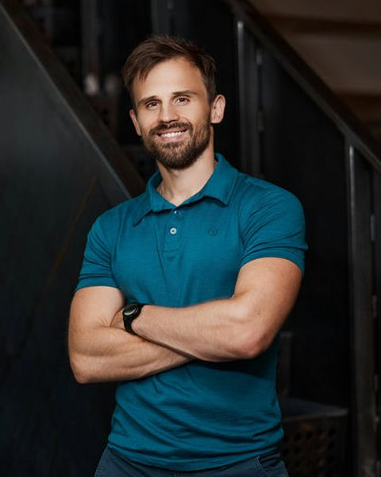
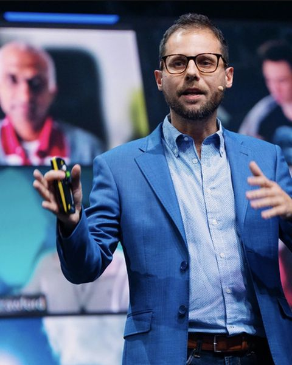

The outcome: a business that grows without grinding you down — new customers arriving every week, no lead going cold, delivery running itself, numbers that talk to you, and your Fridays back. In 18 weeks, founders rebuild the five pillars of their business — marketing, sales, operations, people, finance — into AI systems that run while they lead. Nobody graduates having "learned AI." They graduate owning a machine.
This is version two of the proposal — same thesis, but every figure now re-derived from the source bases, the faculty deconflicted with Expert & Authority, and the format corrected against what the Speaking & Influence journey proved about retention.
We run three successful Masteries. AI Mastery teaches tools and productivity. Entrepreneurship Mastery teaches business frameworks. Social Media Mastery teaches content and funnels. All three run the proven live-cohort model.
The best-rated, best-attended sessions across all three are where AI meets business outcome — yet no programme owns that ground. AIM stops at productivity; EM's AI stayed at chatbot level; SMM never touches operations. Founders sit through three programmes to assemble half a system.
What should we build to own "AI as a business growth system" — and how do we build it so it never collides with Expert & Authority, which shares the pathway, a co-owner, and the mailing lists?
AI for Founders Mastery: 18 weeks, co-owned by Vishen Lakhiani and Daniel Priestley, Teach + Lab pairs, a weekend Growth Intensive — and one graduating artefact: the five pillars of your business running as AI systems.
Our three Masteries cover tools, frameworks and content respectively. None wires AI into demand, sales, delivery and scale end-to-end. Nor does any major competitor.
EM's #1 session ever: Noelle Russell's From Founder → AI-Leveraged Operator, 9.97 (n=38). AIM's #1 teach: Priestley's customer session, 9.68 (n=110). Rooms of 600–800 for AI sessions. All verified against the bases.
Twelve EM sessions, all verified: average 9.55, floor 9.22, ceiling 9.87. His MVU 2026 accelerator scored NPS 90 — "higher than the iPhone at launch," in Vishen's words from the Day 1 stage. Oversubscribed, LAPS, Scorecard, the AI Wrapper and the 6-Step Method map one-to-one onto the gap.
Paired Teach → Lab held S&I 2026's retention at 56% where 2025 collapsed to 31%. AIM's dedicated-owner labs average ≈9.2. And the S&I data tells us exactly where a 3-day intensive belongs: off the mainline cadence.
"Most founders use AI like a browser — open a tab, ask a question, close it. In 18 weeks, Daniel Priestley and Vishen Lakhiani rebuild your business so AI runs your demand, your sales and your delivery — and you run the parts only a founder can: purpose, taste and discernment. You don't graduate with a certificate. You graduate with a machine."
Founders with something already to sell — a product, a service, or themselves as the service — who are drowning in running it. From our 872-respondent intake aggregate: 68% female, 78% aged 45+, service businesses built on expertise. The "AI as a finisher" problem is their own self-report.
"AI as a finisher." Prompt-of-the-week culture. Courses that demo the teacher's setup and send you home to a blank screen — the #1 friction in our own cohort feedback ("this works in your Claude, not mine").
The founder learns each pillar the way a founder needs it — then leaves the week with that pillar running on AI in their real business. The spine is Vishen's Founder-Based AI method from the AI First Founder Quest: the Quest teaches the founder to speak AI; the Mastery builds the company on it.
The company brain, data pipelines, governance, and a working skill library — the "AI cake" every guru names and nobody teaches.
Marketing + Sales pillars: customer intelligence, demand signals, a brand-voice content engine, a pipeline that follows up itself — switched on at the weekend intensive.
Operations + Delivery: agents in production, an operations brain, the product you always needed, and the 4-day founder week made real.
People + Finance: the AI-centred org chart, team adoption done properly, a live finance cockpit, and graduation with the next 12 months loaded.
The Growth System Intensive — a 3-day weekend between weeks 8 and 9, OFF the mainline cadence. Everything from weeks 1–8 assembled into one running demand-and-sales machine: Day 1 strategy floor (Daniel live, Vishen opens) · Day 2 build floor (Vykintas + lab coaches) · Day 3 switch-on — campaigns fired, signals flowing, pipeline live. The earlier draft ran this mid-programme on the mainline; the S&I data killed that design — see the Evidence tab.
Version one of this proposal cited figures from summary documents. Re-deriving everything from the bases found four errors. They are corrected throughout this version, and recorded in data/authors.json.
| v1 claim | What the base actually says |
|---|---|
| "A perfect score (10.0) for a hands-on build lab" | No 10.0 exists. Implementation Labs run 8.14–9.46, average ≈9.2. "Build the App You Always Wished Existed" lab = 9.18 (n=83). The 9.87 belongs to the capstone teach |
| Chris Do "From Viral to Valuable" 9.78, proposed as Module 2–3 bridge | Rating confirmed — but he moves to Expert & Authority, where authority-building is the core promise. Zero guest-faculty overlap between the two Masteries is now a design rule |
| Noelle Russell 9.97 "178 attendees" | Rating confirmed: 9.97, n=38 ratings. 178 was attendance, not sample — the two were conflated |
| Priestley "Find, Understand & Win Your Best Customers" 9.69 | 9.68, n=110 — confirmed within rounding. All twelve of his EM figures verified exactly |
| Session | Base | Rating | n | Why it matters |
|---|---|---|---|---|
| From Founder → AI-Leveraged Operator Noelle Russell | EM | 9.97 | 38 | The full business cycle with AI overlaid — the closest existing session to this proposal's thesis, and the base's best score |
| Tying Everything Together Vykintas Glodenis | AIM | 9.87 | 99 | Integration capstone — its whole family rates top (Q&A 9.66, lab 9.46). Explicit integration moments are our best format |
| Find, Understand & Win Your Best Customers Daniel Priestley | AIM | 9.68 | 110 | The moment AIM pointed AI at customers instead of productivity, it produced its top-rated teach |
| Build Your AI Operating System (Pt 1 / Pt 2) Vykintas | AIM | 9.63 / 9.54 | 79 / 82 | The "OS" framing is already validated — we extend it from personal OS to business OS |
| Build & Test Your Personal AI Operating System Kwame Christian | EM | 9.59 | 44 | Same signal from the EM side — students want systems, not prompts. (Kwame himself teaches in Expert & Authority) |
| What to Build with AI (and What to Avoid) Ajit Nawalkha | EM | 9.58 | 31 | Prioritisation doctrine rates as highly as tooling — founders want judgment, not just capability |
| Build Your First App with AI Vibe-Coding Vishen | AIM | 9.49 | 115 | His strongest AI-practical session, big sample — the W12 product-build week is his natural ground. And the "why now" from the MVU stage: build costs down 97%, build speed up 50× since February |
| The AI-Powered Entrepreneur Vishen | EM | 8.25 | 106 | The draw is enormous, but one session can't hold systems-level depth. The gap between that pull and what one class delivers is the product opportunity |
| Session (EM 2025) | Rating | n |
|---|---|---|
| Designing Your Next 12 Months | 9.87 | 46 |
| Asset Leverage & Repurposing | 9.82 | 34 |
| High Value Offers & Price Anchoring | 9.74 | 68 |
| Monetization Frameworks | 9.61 | 84 |
| Authority Content Systems | 9.56 | 57 |
| The 5 Pillars of Influence | 9.55 | 60 |
| Scaling Influence Systems | 9.52 | 48 |
| Your Signature Positioning | 9.51 | 55 |
| From Idea to Impact | 9.49 | 107 |
| Legacy & Exit Strategy | 9.47 | 55 |
| Oversubscription Strategies | 9.26 | 38 |
| Waitlists, Scarcity & Launch Mechanics | 9.22 | 49 |
Average 9.55 · floor 9.22 · plus 9.68 (n=110) in AIM · MVU 2026 accelerator NPS 90 (Vishen, Day 1 stage). No other guest has this combination of volume and consistency — every number re-derived 18 Aug 2026.
His AI Summit talk already contains the programme's core frames: AI agents as a 24/7 workforce, the two sides of business (speed to market / speed to value), digital soil, the AI Wrapper model, and the 6-Step Entrepreneurial Method at AI speed.
"There's really only two sides to business. Side one is speed to market, and side two is speed to value. That's all we do."
The Vishen × Priestley "Science of Growing Customers" webinar + intensive becomes the natural front door: webinar → intensive → this Mastery. Same voice, same frameworks, ascending commitment. Campaign theory stays in his intensive; this programme teaches the machine.
The same eleven rules that govern the Expert & Authority design, from data/learnings.json. The four that changed this proposal:
S&I 2025's mainline 3-day workshop: 39% → 31% → 34% show-up and a permanent ~14-point retention break. The 2026 weekend-bonus version held the next sessions at 56–58%. Our intensive is now a Fri–Sun weekend; the Tue/Thu cadence never breaks.
AIM's abstract visioning kickoff: 6.04 (n=116) in front of 661 — the base's worst score. Even Vishen's own kickoff only hit 8.47. Week 1 opens with the company brain being built, not a vision session.
AIM's best-rated cluster is the capstone family: teach 9.87, Q&A 9.66, lab 9.46. This design has two explicit integration moments — the intensive switch-on and the W18 graduation assembly.
One S&I host-swap drew 24 detractor submissions; single-lead programmes hit a month-two repetition cliff. Named authors rotate the teach slot inside the co-owners' arc, and Vykintas is standing cover so a cancellation never becomes a substitution.
Design consequences. Beginner-proof the lab floor (starter kit + two-speed labs are core product, not afterthought). Certification flexes by stage — idea-stage founders graduate on the demand engine and first customers; established founders on delivery agents and the asset engine. Her story leads the marketing: decades of industry nuance beat the 19-year-old AI bros. Call times anchor US morning / EU evening. Every framework demonstrated on a service business, not a startup.
One pillar, one framework, one founder case, one decision about your own business. Daniel and Vishen open and close every guest week with recorded framing, so the arc is always theirs.
The Tuesday decision becomes a working system: build-along on the Founder OS Starter Kit, one volunteer's business built live, two speeds (build-along / watch-then-replay). Every lab ends with a shipped system.
One concrete deliverable, submitted to the community, reviewed in the next Q&A block. Certification requires a running system per pillar — not videos watched.
The AI First Founder Quest gives every student the same four-step literacy (Vision → Brain → Create → Team). The Mastery points that literacy at the five pillars — and each pillar graduates as a system, not a lesson.
| Pillar | Weeks | What AI runs by graduation | What stays human |
|---|---|---|---|
| Marketing | W5–7 | Customer intelligence, demand signals, a content engine drafting in the founder's voice | Taste, voice on flagship content, the philosophy |
| Sales | W8 + intensive | Qualification, follow-up, proposals, the pipeline cockpit — no lead goes cold | Every high-trust conversation and close |
| Operations & delivery | W9–12 | Onboarding, fulfilment support, SOPs-as-agents, reporting — plus the product build | Judgment calls, escalations, the moments that build loyalty |
| People | W14–15 | A shared skill library, role–agent pairing, adoption scorecards | Leadership, culture, bringing humans with you |
| Finance | W16 | Cashflow visibility, forecasts, unit economics, the weekly founder brief | Purpose, pricing philosophy, the big bets |
The ecosystem, without cannibalisation. The AI First Founder Quest is the on-ramp — founder-self and tool literacy, assumed and never repeated. Daniel's Science of Growing Customers intensive owns demand strategy — campaign theory lives there, and the Mastery touches campaigns in exactly one session, through the AI-execution lens. Expert & Authority Mastery owns personal brand, positioning and the product ladder — this programme automates content, it never teaches voice. The Mastery owns what none of them teach: the machine.
Early win in week 1 — a company brain that answers like a co-founder, by Thursday night. A felt breakthrough per module. The weekend intensive as a re-commitment spike that costs no cadence. Pods that make quitting visible.
Every week ends with a shipped system. Five of the 6 Shifts: Mindset (operator → orchestrator), Habit (weekly cockpit review), Show-Up (founder as key person), Lifestyle (4-day week), Tool Kit (the full OS).
No on-camera pitching. The Quest feeds the Mastery through experience; the intensive cross-sells through the ecosystem, not the lessons. Guest authors contractually no-pitch.
Front door: AI First Founder Quest + AI Summit. On-ramp: EM & AIM alumni. Continuity: alumni reunion + quarterly OS-upgrade calls. Launch itself runs Oversubscribed mechanics — the marketing is a live demo of Module 2.
Follow-along AI workshops fail when tooling isn't pre-configured — observed in both SMM and EM capstones ("this works in your Claude, not mine"). Mitigation: the Founder OS Starter Kit ships in onboarding week — pre-built skills, prompts, project templates, connector guides — plus two-speed labs, the fix Domenic improvised mid-cohort, formalised.
The ambition–reality gap is the product, but also the risk: 53% want "advanced AI apps & automations," 58% self-rate beginner. Mitigation: the Quest is a hard prerequisite; W1–4 rebuild fundamentals at company scale before any pillar work; certification has two valid paths by stage.
Same pathway, same co-owner, overlapping lists. Mitigation: the boundary is structural — this programme fixes capacity, E&A fixes demand; zero guest-faculty overlap (Chris Do, John Lee, Kwame, McKenna, Nichols, Ellis teach E&A; Noelle, Marie, Shawn, Alex, Ajit teach here); and content weeks automate the pipeline while E&A owns the voice that goes in it. Full boundary in the Positioning tab.
Click a module to expand. Each week: Tuesday TEACH + Thursday LAB. The AI First Founder Quest is the assumed on-ramp — nothing below repeats it. Session titles get an ABCS pass before launch.
The age-of-intelligence reset, co-opened by both owners: Daniel on why every business must be reinvented, Vishen on Founder-Based AI as the method. The five pillars named; the promise made. Opens with a build, not a visioning session — the 6.04 kickoff is the counter-example we design against.
Starter-kit install; the context layer — offers, voice, customers, numbers, proof stories — live in a governed project.
From the Quest's personal SEED to the company SEED: mission, data, docs, meetings. Record-everything as an organisation, not a habit — the brain every pillar runs on.
Document and meeting pipelines wired in; the brain interrogated against your real numbers; blind-spot report generated.
The "AI cake" finally taught, not named: model and tool selection, permissions, security, data hygiene, client confidentiality — enterprise discipline sized for a 3-person company. Taught by the 9.97 session-holder (n=38).
Connectors, permission scopes, an AI policy for your business; what never goes into the model and why.
Skills as company assets. The authoring craft the Quest skipped: anatomy of a great skill, testing, versioning, sharing — your expertise made executable.
Voice skill, offer skill, reporting skill — built, tested head-to-head, saved to a shared library.
Customer intelligence: the ICP found in your own data, message-market fit, never running out of ideas — marketing's thinking layer before its machinery. Her idea-generation session rated 9.61 (n=23) in SMM.
AI research engine mining reviews, communities and past clients; a living avatar every downstream system reads.
How his seven companies capture demand with AI at the centre — capacity, signals, assessments as tooling. One campaign session, taught through execution; the full campaign playbook stays in his intensive.
Assessment/scorecard built and shipped in-session; a signal dashboard counting real interest by Thursday night.
Marketing without the slop: the voice skill from W4 running a weekly pipeline — brand-building, not platform tactics. The voice itself is Expert & Authority's territory; this week automates its distribution.
IP vault + ideas engine + drafting skills chained: a week of on-voice content from one founder-hour, anti-slop gate built in.
The sales pillar: qualification, nurture, proposals, follow-up — where automation lifts conversion and where it kills trust. Human-in-the-loop at every closing moment. His Webinars to Sell rated 9.58 (n=57).
CRM agents, follow-up sequences, proposal generation, pipeline cockpit — armed for the weekend intensive.
Demand strategy meets the systems built in weeks 1–8. Daniel's flagship day — one of five protected anchor days.
Each founder maps their demand-to-close flow and identifies the one bottleneck the weekend must clear.
Brain → intelligence → lead capture → content engine → pipeline, wired into one flow on the starter kit. Two speeds, coaches on the floor.
Test traffic through the whole machine; every hand-off verified.
Campaigns launched in-session, signals flowing, pipeline live, cohort showcase. Founders enter Module 3 with real customers in motion.
Every founder demos one live system to the room.
Why the weekend, not the mainline. Version one ran this intensive as mainline week 9. S&I 2025 proved that design kills: its mainline 3-day workshop drew 39% → 31% → 34% and broke the retention curve permanently, while the 2026 weekend-bonus version held the following sessions at 56–58%. Three hours a day, full replay, two speeds — and Tuesday's teach happens as normal the following week.
The first mainline week after the intensive: reading the live signal data, tuning the machine, and the doctrine of iteration — what to touch, what to leave alone, what the numbers are telling you.
Every founder's live pipeline reviewed against benchmarks; one improvement shipped.
One agent, one job — from her 9.97-rated playbook: onboarding, fulfilment support, service workflows with escalation gates where trust lives.
A real customer journey automated end-to-end with human checkpoints; experience score instrumented.
SOPs become agents. Meetings become ops data. The orchestration depth the Quest skipped — scheduled runs, multi-step automations, tool-to-tool workflows. His capstone family (9.87 / 9.66 / 9.46) is the best-rated cluster in the AIM base.
A reporting automation and an admin automation running on schedule before Friday.
From vibe-coding to a real product: scope with user stories, build, ship — and put AI inside your offer, not just behind it. His strongest AI-practical session: 9.49, n=115.
Working product built in-session and placed in front of ten real users this week.
The founder's own system — the Quest's promise made operational: decisions, energy, priorities, the weekly rhythm of an orchestrator. "Managing time, energy & focus" ranked 6th of 13 wanted skills; for solopreneurs it is a core promise, not a bonus.
One dashboard: pipeline, delivery health, weekly AI founder brief, priorities agent.
Daniel's modern org chart actually taught: AI systems at the centre, four human roles around it — influence, growth, delight, performance. Rule of 40 and revenue-per-FTE as founder instruments. Alex — Mindvalley's own COO/CHRO and author of Replaced by AI — brings the org design as lived at scale, not just drawn.
Role–agent pairing map for your business; the accountability chart with AI load-bearing.
Adoption and change management — the promise every AI course makes and skips: training, fear-to-empowerment, role redesign, measuring adoption. Noelle's enterprise playbook plus Alex's live operational authority from transforming Mindvalley's own people systems.
Training plan, shared skill library access, adoption scorecard — deployed to your real team (or your first future hire).
Founder finance with AI: cashflow visibility, pricing and unit economics, forecasts — the pillar every other programme skips. Shawn is a CPA with a Deloitte background, which is why the deck recommends him here rather than only on disruption. His AI Summit debut scored 8.24 (n=93) — the one author here below 9, flagged honestly; the CPA credential is the bet.
Live finance cockpit: cash, margin, forecast, scenario models — with a 12-month financial plan loaded.
Future-proofing you: disruption as a practice, taste and humanity as the moat, the reinvention habit that keeps the machine yours.
Next year loaded into the OS: repeatable weeks, quarterly spotlights, the annual big move — campaigns pre-armed.
The co-owners close together — Daniel's highest-rated EM session (9.87, n=46) as the ceremony: from momentum to market leadership. Certification, success sharing, cohort showcase. The second explicit integration moment, per learning L10.
The S&I continuity mechanic: reunion, wins audit, quarterly OS-upgrade calls as the bridge to the next cohort.
The chain of command: Vishen anchors (the AI lens — his Founder-Based AI method), Daniel architects (the entrepreneurship lens — five protected anchor days), Vykintas builds it every Thursday. The deconfliction rule: Chris Do, John Lee, Kwame Christian, Paul McKenna, Lisa Nichols and Natalie Ellis teach Expert & Authority; nobody teaches both.
The most consistent 9.5+ performer in the entire Mindvalley dataset — the one faculty claim from version one that survived verification intact, all twelve figures exact. His campaign theory stays in his own intensive; here he teaches the machine behind his seven businesses.
The Mastery deepens his own Founder-Based AI method, so the voice that onboards every student through the Quest anchors the Mastery. His data says the same thing as E&A's: structured builds rate 9.5+, broad single-session AI overviews rate low on big samples — which is an argument for this programme existing.

Version one credited him with a perfect-10 lab; the base says otherwise, and he doesn't need the inflation — his capstone family (teach 9.87, Q&A 9.66, lab 9.46) is the best-rated cluster in the AIM base, and he owns the exact lab mechanic this programme adopts. He also owns the Founder OS Starter Kit and stands as teaching cover, so a guest cancellation never becomes a substitution (learning L3).
The highest-rated session in the EM base, and the enterprise-grade voice for the parts that must be right. Students explicitly asked for her back.
Fifteen years teaching exactly our intake profile. Honest read: her two SMM sessions split 9.61 / 8.76 — the practical one scored, the mindset one didn't. Both her weeks here are practical.
The one author below 9 with our students, flagged plainly. The bet is the CPA credential on the finance pillar — per the deck's own recommendation — plus the strongest stage presence on the roster. Pilot-review after W16.

The person implementing AI people systems inside the company that built this programme. No cold outreach needed. Co-teaches rather than owns, so the unrated exposure stays bounded.
Held in reserve. Ajit Nawalkha (EM avg ≈9.6 across ~25 sessions) — allocation decided: he co-teaches the ladder week in Expert & Authority; here he is the named fallback if a co-owner's diary breaks, nothing more. Domenic Ashburn (six SMM/AIM sessions at 9.47+, samples up to n=229) for creative-AI weeks in cohort 2. Rising stars per the deck: Lara Acosta and Greg Isenberg, both cohort-2 candidates with no Mindvalley rating yet. Nobody joins the faculty page without clearing the data bar.
The non-negotiable rule: curriculum comes first. Always. No exceptions.
Before any contract is sent: (1) lesson count per author defined and agreed, (2) topics and session titles confirmed, (3) recording schedule and format locked. This tab satisfies all three.
Daniel owns the framework spine (strongest data in the building); Vishen owns the method and the on-ramp. The deck's alternative — Ajit for ops rhythm — is held as the fallback if either owner's diary breaks.
Compensation: royalty split across both owners — settle the split before enrolment projections are shared.
Co-owners 5–6 anchor sessions each plus bookends; core author (Noelle) 3; guest specialists 1–2; lab lead all 17 labs plus one teach.
Co-owners → ongoing % of programme revenue. Core author and guests → flat fee per lesson. Rising stars → flat fee first, renegotiate on performance. Enrolment projections ready before the royalty conversation.
| Person | Tier | Live sessions | Payment model |
|---|---|---|---|
| Daniel Priestley | Co-owner · architect | 5 anchor days (W1, W6, W14, W18, Intensive D1) + W9 co-teach + recorded bookends | Royalty % |
| Vishen Lakhiani | Co-owner · anchor | 5 teach weeks (W2, W4, W8, W12, W13) + co-opens W1, intensive, W18, W9 | Royalty % |
| Vykintas Glodenis | Lab lead | 17 labs + W11 teach + intensive Days 2–3 + Starter Kit owner + teaching cover | Internal |
| Noelle Russell | Core author | 3 teach (W3, W10, W15) | Flat fee per lesson |
| Marie Forleo | Guest specialist | 2 teach (W5, W7) | Flat fee |
| Shawn Kanungo | Guest specialist | 2 teach (W16, W17) + intensive keynote option | Flat fee · pilot-review after W16 |
| Alex Dogliotti | Co-teach | 2 co-teach (W14, W15) | Internal |
Totals: 18 teach sessions · 17 labs · 3 intensive days = 38 live touchpoints, 35 on the mainline cadence.
| Element | Spec | Precedent / evidence |
|---|---|---|
| On-ramp | AI First Founder Quest as hard prerequisite — its 4-step literacy never re-taught | The Quest ends with "the learning doesn't end here" and no next step; this is the next step |
| Duration | 18 weeks + onboarding week + alumni reunion (+6 wks) | Within the repetition-cliff limit (learning L5): rotating authors, distinct weekly artefacts |
| Cadence | Twice weekly: Teach (Tue) → Implementation Lab (Thu). Nothing scheduled off-rhythm | S&I paired-cadence retention +14.8pts; off-cadence add-ons drew 23% for even the strongest teacher (L2) |
| Intensive | Weekend (Fri–Sun) between W8 and W9, 3h/day, full replay, two speeds | L1 — the S&I mainline-intensive collapse and the verified 2026 weekend fix |
| Labs | One owner (Vykintas) for all 17; every lab ships a running system | AIM dedicated-owner labs avg ≈9.2 (verified 8.14–9.46); S&I's ownerless workshops rate below its lessons (L9) |
| Kickoff | Opens with the company-brain build, not visioning | AIM's visioning kickoff: 6.04, worst in base (L8) |
| Starter kit | Pre-built skills, prompts, templates, connector guides — installed in onboarding week | Fixes the #1 observed lab failure ("works in your Claude, not mine") |
| Community | Pods, hot-seat calls, build clinics, wins wall — every touchpoint has a job | Unstructured community calls: 5.89 (L6) |
| Breakouts | Only with an artefact-producing brief, time-boxed, opt-out available | #1 detractor theme in the S&I feedback — 20 of 148 (L4) |
| Teacher cover | Vykintas is standing cover; announced authors are contracted first | The S&I host-swap drew 24 detractor submissions (L3) |
| Stack | Opinionated: Claude (projects/skills/MCP) as the spine, one assessment tool, one automation layer | Tool sprawl is a recurring cohort complaint |
This is the certification bar: not videos watched, but a machine switched on. Each component is built in a named week and keeps compounding after graduation.
Context layer, data pipelines, governance and a shared skill library — the foundation every pillar runs on.
Customer intelligence, live lead capture, brand-voice content engine and a pipeline that follows up itself — switched on at the weekend intensive.
Delivery agents in production, an operations brain, and the product you always needed — built.
The AI-centred org design, role–agent pairing, training and adoption scorecards — humans brought along, properly.
Cashflow, pricing, unit economics and forecasts on one live dashboard — the pillar everyone else skips.
The 4-day founder week, the weekly AI brief, and a 12-month growth calendar loaded.
Certification, two valid paths. Path A — idea/early founders: graduate on the Demand Engine plus first customers in motion. Path B — established founders: graduate on Delivery Agents plus the Asset Engine, with a measurable operational lift. Same OS, different proof. Both require running systems; neither can be satisfied by attendance.
They live on different pathways — Expert & Authority in Authority, AI for Founders in Entrepreneurship — but both are co-led by Vishen and both sell to overlapping lists, so the line between them has to be stated once, precisely, and held. It is not a difference of topic. It is a difference of what is broken in the student's business.
This boundary is rendered from one shared source (data/boundary.json) on both proposals and on the standalone positioning page, so the documents cannot drift apart.
They already have something to sell. The problem is that every part of it runs through them. Eighteen weeks rebuilding five pillars — marketing, sales, operations, people, finance — as AI systems that run while they lead.
They already know something valuable. The problem is that nobody is buying it yet — no profile, no offer, no path from stranger to client. Seventeen weeks building a name and a ladder for it to climb.
The one-question router. "Do you have something to sell that's drowning you — or something to say that nobody's paying for yet?"
Drowning in delivery → AI for Founders. Unknown with real expertise → Expert & Authority. Can't hold a room at all → Speaking & Influence. If a prospect can't answer, they are Expert & Authority: you cannot systematise demand that doesn't exist yet. The usual sequence is Expert & Authority first, then AI for Founders — build the name, then the machine to serve it.
| Expert & Authority Mastery | AI for Founders Mastery | |
|---|---|---|
| The buyer | Has expertise and wants to be known and paid for it | Has a product or service — even if the service is them — and wants it to run and scale |
| What's broken | Demand. Nobody knows they exist | Capacity. The founder is the bottleneck |
| The question it answers | "Why should anyone choose me?" | "How do I deliver at scale?" |
| The lever | Story, voice and positioning. The founder doing the work better | AI and automation. Systems doing the work |
| What AI is | A chief of staff — explicitly never a substitute for voice | The substance of the programme |
| Content is taught as | Distinctiveness — your edge, your uncommon take, your story | Throughput — a pipeline drafting in the founder's voice at volume |
| Sales is taught as | The enrolment conversation and the close from stage. Human sales | A pipeline that follows up itself. Machine sales |
| Where the founder ends up | In front of the audience — the recognised authority | Out of the machine — orchestrator, four-day week |
| Proof at graduation | Assets published: a product live, a masterclass shot, first revenue banked | Systems running: agents in production, pipeline live, numbers on one dashboard |
| Duration & cadence | 17 weeks · Teach + Lab | 18 weeks · Teach + Implementation Lab |
Content: AI for Founders automates the pipeline; Expert & Authority finds the voice that goes into it. Offers: AI for Founders prices and delivers what exists; Expert & Authority designs the ladder that doesn't exist yet. Demand: AI for Founders builds the capture mechanism; Expert & Authority builds the reason anyone fills it in. Neither programme teaches the other's half — and the zero-overlap faculty enforces it.
S&I's own detractors flagged scope drift, verbatim: "I'm only interested in speaking, not creating a course or teaching or creating a business" — on the week that programme drifted into Expert & Authority territory. Scope drift is not a marketing problem; it is a refund generator. Each programme teaches its own promise and cross-refers the rest. The sequence also matches our intake — 68% female, 78% aged 45+, service businesses built on expertise, 91% of Social Media Mastery students not yet earning from their audience: those students have nothing to systematise yet.
Vishen's 10-lesson Quest: founder-self + AI literacy. The community it primes is this Mastery's warm list.
Daniel's intensive owns campaign theory and oversubscription. The Mastery references it, never repeats it — clean cross-sell both ways.
18 weeks, the five pillars rebuilt as AI systems. Priced at Mastery tier; launched with waitlist mechanics from Daniel's own cookbook.
Quarterly OS-upgrade calls + alumni reunion; the bridge to the next cohort and the pathway.
EM base (appJVtywkn9mTFbLs), AIM base (appHS19yXObg8sHZv), SMM base (appf3Molaaw26nIH8), S&I base (appKlfvxdXofNlFfk) — all read 18 August 2026. Canonical figures in data/authors.json; format learnings in data/learnings.json. Pre-2025 AIM records use a 5-point scale and are excluded from rankings.
Shawn Kanungo above 8.24 with our students; Alex Dogliotti's teaching (internal, unrated); Marie Forleo's consistency (9.61 vs 8.76 split); the intake aggregate's per-question crosstabs, which come from the v1 proposal's survey pulls and have not been independently re-derived. Each carries a checkpoint in the decisions list.